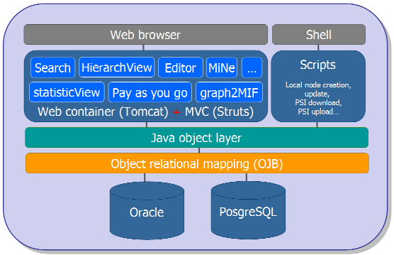

|
|
|
|
Home
/
Developer_Contents
|
|
|
|
|
How does the database IntAct work?
|
|
Implementation overview

Web Browser
Software application used to interface with IntAct. For example
Mozilla Firefox, Netscape Navigator, Microsoft Internet Explorer.
Web-based Programs
Search, HierarchView, Editor, NiMe, statisticView, Pay as you go, graph2mif
Search
Enables a user to search the IntAct database using Gene name, IntAct Ac, UniProtKB Ac, UniProtKB Id, InterPro Ac, GO Id or PubMed Id.
HierarchView
Provides a visual representation of Interactions using Graph theory where the proteins are represented by nodes (or vertices) and
interactions by lines (or edges).
Editor
Program used by IntAct curators to add and edit molecular interaction data.
MiNe
Undertakes the task of computing the minimal connecting networks for a given set of proteins. The results are viewed using HierarchView.
Pay as you go (Targets)
This is designed to determine using only the data which is currently available in the IntAct database and exploiting the scale-free
distribution of protein interaction networks which proteins are likely to be central in Interaction Networks and thus will be good
candidates as “baits” in Interaction detection experiments.
graph2mif
Given the IntAct accession number of a protein, it will generate the interaction network around this protein and return it in PSI
format. The URL with a sample accession number is:
http://www.ebi.ac.uk/intact/graph2mif/getXML?ac=EBI-367&depth=1&strict=false
Web Container (Tomcat)
Apache Tomcat is the Servlet container that is used to implement Java Servlet and JavaServer Pages technologies.
MVC(Struts)
Open source frameworks and toolkits, a variation of the classic Model-View-Controller (MVC) design paradigm, that helps developers
build applications for the web.
Java Object Layer
This models the data and provides the Java objects required to represent the data. The
UML diagram
that shows how the objects relate to one another and to see the application-programming interface (
API
)
, which gives details of the set of commonly used methods.
Object Relational Mapping (OJB)
IntAct uses Apache Object Relational Bridge (OJB), which is an “Object/Relational mapping tool that allows transparent persistence for
Java Objects against relational databases”. OJB uses an XML based Object/Relational mapping for flexibility, scalability and functionality.
It can be thought of as like a XML directory which lists the Java Object and directs them to the correct table in the database.
Oracle & PosgresSOL
Both are Relational Database Management System(s) (RDSM), which are used to hold and access IntAct data. The main difference between
them is that Oracle is commercial software which is not open-source but well developed for complex applications while
PosgresSQL
is
free to download and open-source. Currently Oracle is used for the public version of IntAct while the PosgresSQL database is used
for development purposes.
Shell & Scripts
These refer to UNIX utilities used in the production of new releases. Scripts aid the IntAct developers to automate repetitive tasks in
compiling the data for a new release.
|
|
|
|
|